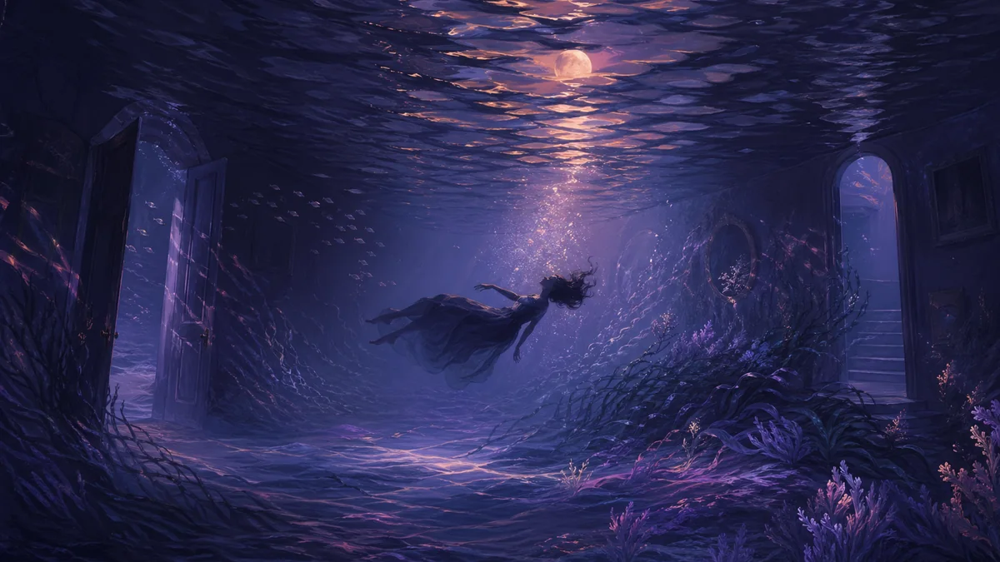

Sogni acquatici: significato dei sogni di annegamento, oceano e inondazione
L'acqua ti circonda. Forse stai nuotando in un vasto oceano, stai lottando contro un'alluvione o stai affondando sotto le onde. I sogni sull'acqua sono tra le esperienze oniriche più potenti e simboliche. Attraverso le culture e nel corso della storia, l'acqua ha rappresentato la profondità delle emozioni umane e la misteriosa mente inconscia. Immergiamoci in ciò che i tuoi sogni acquatici stanno cercando di dirti.

Sogni d'acqua: comprendere il simbolo universale
Nell'interpretazione dei sogni, acqua è forse il simbolo più universale per le emozioni. Proprio come l’acqua può essere calma o turbolenta, profonda o poco profonda, limpida o torbida, lo stesso vale per i nostri stati emotivi. Questo simbolismo appare praticamente in ogni cultura e tradizione psicologica.
L'acqua rappresenta anche la mente inconscia - le vaste, spesso nascoste profondità della nostra psiche che si trovano sotto la consapevolezza superficiale. Quando sogni di immergerti in profondità nell’acqua, potresti esplorare le profondità del tuo inconscio. Quando l'acqua sale spontaneamente, emozioni o materiale inconscio potrebbero richiedere la tua attenzione.
"L'acqua è il simbolo più comune dell'inconscio. Il lago nella valle è l'inconscio che giace, per così dire, sotto la coscienza." - Carl Jung
Tipi di sogni acquatici e loro significato
Il tipo specifico di acqua nel tuo sogno ha un significato distinto:
Il oceano rappresenta il vasto inconscio, emozioni collettive o le infinite possibilità della vita. Le sue dimensioni possono sembrare maestose e travolgenti, riflettendo ciò che potresti provare riguardo alla profondità e al mistero della vita.
Sogni di annegamento
Annegare in genere simboleggia sentirsi sopraffatto da emozioni o circostanze. Potresti sentirti "fuori di testa"; o incapace di affrontare ciò che la vita ti sta riservando.
I sogni di alluvioni
Le inondazioni rappresentano emozioni travolgenti, grandi sconvolgimenti o situazioni che sembrano incontrollabili. Possono anche simboleggiare la pulizia emotiva o il rilascio di sentimenti repressi.
Swimming Dreams
Il nuoto suggerisce che stai navigando nella tua vita emotiva. Il nuoto facile indica competenza emotiva; difficoltà a nuotare suggerisce difficoltà nel gestire sentimenti o situazioni.
Sogni di laghi o stagni
I corpi d'acqua contenuti spesso rappresentano emozioni contenute o il tuo stato emotivo interiore. Un lago calmo suggerisce la pace; uno stagno torbido può indicare sentimenti confusi o poco chiari.
Sogni di fiumi
I fiumi simboleggiano il flusso della vita, del tempo e del viaggio emotivo. Seguire la corrente suggerisce accettazione; nuotare contro di essa può indicare resistenza al cambiamento o alla direzione della vita.
Interpretazione del sogno sull'acqua: perché lo stato dell'acqua è importante
Oltre al tipo di acqua, le sue condizioni forniscono informazioni cruciali sul tuo stato emotivo:
Acqua limpida
L'acqua cristallina indica tipicamente chiarezza emotiva, purezza di sentimenti o chiarezza di pensiero. Potresti aver acquisito una visione approfondita delle tue emozioni o sentirti emotivamente trasparente e onesto.
Acqua torbida o sporca
L'acqua poco chiara suggerisce confusione emotiva, sentimenti repressi o situazioni che non sono ciò che sembrano. Potresti non essere chiaro riguardo ai tuoi sentimenti o affrontare un territorio emotivo oscuro.
Acqua calma
Tuttavia, l'acqua pacifica riflette pace interiore, tranquillità emotiva ed equilibrio. Potresti trovarti in una situazione emotiva positiva o il tuo sogno ti sta mostrando cosa è possibile quando trovi la calma.
Acqua turbolenta
Mari tempestosi, rapide o acque agitate indicano turbolenza emotiva, conflitto interiore o circostanze di vita che sembrano caotiche. Potresti attraversare momenti emotivamente difficili.
Acqua crescente
I livelli dell'acqua che aumentano suggeriscono emozioni o situazioni che stanno diventando travolgenti. Qualcosa nella tua vita potrebbe accumularsi e richiedere attenzione prima di "allagarsi".
Acqua calda o fredda
L'acqua calda spesso simboleggia conforto, calore emotivo o sentimenti nutritivi. L'acqua fredda può rappresentare freddezza emotiva, chiarezza rinfrescante o un "campanello d'allarme" alle tue emozioni.
Interpretazioni comuni dei sogni sull'acqua
1. Sopraffazione emotiva
L'interpretazione più comune dei sogni acquatici, in particolare annegamenti, inondazioni o tsunami, è sentirsi emotivamente sopraffatti. La vita potrebbe riservarti più di quanto ti senti attrezzato per gestire.
2. Processi inconsci
I sogni acquatici spesso segnalano che qualcosa del tuo inconscio sta cercando attenzione. Potrebbero trattarsi di ricordi repressi, sentimenti non riconosciuti o conoscenza intuitiva che cerca di emergere.
3. Pulizia emotiva
Sogni acquatici positivi - fare il bagno, nuotare in acque limpide o pioggia - possono rappresentare purificazione emotiva, guarigione o eliminazione della negatività. Potresti rilasciare il vecchio bagaglio emotivo.
4. Transizioni della vita
Attraversare l'acqua, i fiumi o essere trasportati dalle correnti spesso simboleggia transizioni nella vita. Potresti passare da una fase emotiva a un'altra o affrontare un cambiamento significativo nella tua vita.
5. Fertilità e creatività
L'acqua ha antichi legami con nascita, fertilità e potenziale creativo. Il tuo sogno sull'acqua potrebbe evidenziare possibilità creative o la nascita di nuove idee.
6. Profondità spirituali
In molte tradizioni, l'acqua rappresenta la purificazione spirituale e la profondità dell'esperienza spirituale. Il tuo sogno potrebbe chiamarti verso un'esplorazione spirituale più profonda.
Prospettive psicologiche
Vista junghiana
Carl Jung considerava l'acqua il simbolo principale dell'inconscio. Credeva che immergersi nell'acqua nei sogni rappresentasse l'esplorazione dell'inconscio, mentre l'innalzamento dell'acqua poteva indicare contenuti inconsci che richiedevano attenzione da parte della mente cosciente.
Interpretazione freudiana
Freud associava l'acqua alla nascita, al grembo materno e alla sessualità. Entrare nell'acqua potrebbe simboleggiare il ritorno al grembo materno o i ricordi della nascita, mentre l'acqua nei sogni potrebbe rappresentare pulsioni e desideri primordiali.
Psicologia moderna
La ricerca contemporanea sui sogni collega i sogni acquatici all' elaborazione emotiva e alla regolazione dello stress. Il cervello può utilizzare le immagini dell'acqua per elaborare le esperienze emotive, con lo stato dell'acqua che riflette gli stati emotivi attuali.
"I sogni acquatici sono il modo in cui la psiche ci mostra il nostro paesaggio emotivo. Presta attenzione a come si comporta l'acqua: ti dice come scorrono le tue emozioni." - Dott.ssa Kelly Bulkeley, ricercatrice sui sogni
Lavorare con Water Dreams
Ecco come ottenere informazioni dettagliate dai tuoi sogni acquatici:
1. Annota lo stato dell'acqua
Immediatamente al risveglio, registra la condizione dell'acqua : calma, turbolenta, limpida, torbida, calda, fredda, in aumento, in diminuzione. Ciò riflette il tuo stato emotivo.
2. Considera le tue azioni
Stavi nuotando, annegando, galleggiando, immergendoti? Il tuo rapporto con l'acqua rivela come gestisci le tue emozioni. Il nuoto attivo suggerisce impegno; l'annegamento suggerisce sopraffazione.
3. Identificare le emozioni
Come ti sentivi nel sogno? Paura, pace, euforia, panico? Il tono emotivo spesso conta più del contenuto letterale.
4. Cerca paralleli nella vita
Chiediti: Dove nella mia vita da sveglio mi sento così? Sopraffatto? Sopra la mia testa? Emotivamente confuso? Seguire il flusso? Il sogno potrebbe evidenziare aree specifiche della vita.
5. Affronta i sogni acquatici ricorrenti
Se i sogni acquatici si ripetono, soprattutto quelli angoscianti, la tua psiche sta enfatizzando qualcosa che richiede attenzione. Considera quali emozioni potresti reprimere o quali situazioni ti sembrano travolgenti.
6. Coinvolgi il simbolo
Prova immaginazione attiva - mentre sei sveglio, visualizza te stesso nel sogno e interagisci in modo diverso con l'acqua. Ciò può fornire informazioni e risoluzione emotiva.
Esplora i simboli correlati
Immergiti più a fondo nei simboli di questo articolo:
FAQ
Cosa simboleggia l'acqua nei sogni?
L'acqua nei sogni rappresenta universalmente le emozioni e la mente inconscia. Lo stato dell'acqua - calmo, turbolento, limpido o torbido - riflette il tuo stato emotivo. L'acqua profonda spesso simboleggia le emozioni profonde o l'inconscio, mentre la superficie rappresenta la consapevolezza cosciente.
Cosa significa sognare di annegare?
I sogni di annegamento simboleggiano tipicamente il sentirsi sopraffatti dalle emozioni o dalle circostanze della vita. Potresti sentirti come se fossi "fuori di testa" con responsabilità, relazioni o sentimenti. Può anche indicare emozioni represse che minacciano di emergere.
Cosa significano i sogni di alluvione?
I sogni di inondazione spesso rappresentano emozioni travolgenti, grandi cambiamenti di vita o sensazione di perdita di controllo. Possono simboleggiare il rilascio emotivo, la pulizia o situazioni della tua vita che sembrano incontenibili. Il contesto e la tua risposta emotiva forniscono importanti indizi sul significato.
Continua a leggere
Altre risorse sullo stesso tema
Significato dei sogni ricorrenti: comprendere i loro messaggi
Perché continui a fare lo stesso sogno? Scopri cosa il tuo subconscio sta cercando di dirti.
InterpretazioneSogni di denti che cadono: significato e interpretazione
Perché sogni di perdere i denti? Scopri le 7 interpretazioni più comuni.
InterpretazioneSogni di cadere: perché sogni di cadere nel vuoto
Perché sogni di cadere nel vuoto? Scopri il significato psicologico.